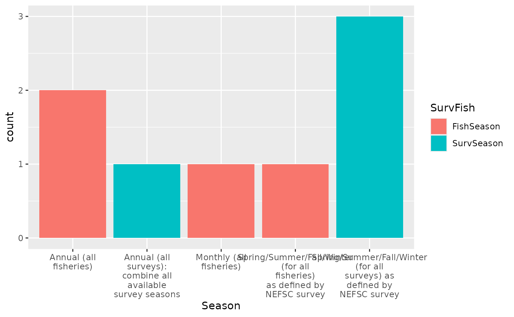

MS Keyrun Dataset Dimensions
Sarah Gaichas
06 October, 2022
Source:vignettes/DatasetDimensions.Rmd
DatasetDimensions.RmdProposed Dimensions
Years: 1968-2019
All surveyed agreed to end with the complete year of data 2019 to be as up to date as possible. Start year is the earliest survey year where both spring and fall are available.
Seasons: Annual fisheries, Seasonal surveys
Pull annual data for fisheries, pull annual survey maintaining seasons as “spring”, “fall” etc. for each year. Many models use annual catch so further resolution is unnecessary; modelers can choose to fit seasonal survey indices separately or combine to a single annual value from seasonal (documenting methods).
Spatial: 2 Approaches for Georges Bank
Ideal: Define using Georges Bank EPU, scale fisheries catch for each species from stat areas to GB EPU footprint using ratios in spatially explicit VTR subset of catch data. Work towards this ideal, comparing coverage of VTR data by species and different methods for scaling as part of data documentation. Consult with ADIOS team and assessment experts to see if results look reasonable.
The ideal is time-consuming and cannot be started until mid-late September 2020 at the earliest.
Interim: Define using fishery statistical areas (521-522, 525-526, 551-552, 561-562) and match survey data as much as possible to these. It is easier to map survey strata to larger fishery areas than the other way around; Sean can share code which may be modified by Gavin’s student to achieve this.
The interim represents the upper bound of what catch would be by species for comparison to the ideal approach and can be implemented fairly quickly.
Other notes
By either spatial definition, inshore survey strata should not be relevant to Georges Bank, so the beginning and end years remain as above, and there should not be a need to combine inshore and offshore surveys using Conn method or VAST for Bigelow years.
The group decided that the base dataset would pull survey data separately for the Albatross and Bigelow years without applying any conversion factors. These separate series can be used as indices in the structured models (MSCAA and Hydra).
Methods for making a single survey time series from the two vessel survey time series (and for making annual indices from the seasonal surveys) would need to be discussed for the other models, and methods clearly documented. For example, the Georges Bank Rpath was calibrated to Bigelow data from 2013-2015; therefore if a single survey time series is needed, it makes sense to convert Albatross survey catches to Bigelow units using established conversion factors. We are putting off this discussion for now.
Full survey results
Survey conducted week of June 15 2020, extended to 3 July
#survey link https://forms.gle/Pq78yqwa5ueFi8Kq8
#results https://docs.google.com/forms/d/1y78AdOeRp0ohGSDU5QP2d2UBCz--eP_5b5Tu79QO-N8/edit#responses
# resultfile <- drive_find(pattern = "MS-Keyrun Dataset Dimensions", type = "spreadsheet")
# responses <- drive_download(resultfile, type = "csv", overwrite = TRUE) %>%
# {read.csv(.$local_path)}
responses <- read.csv("supportingFiles/MS-Keyrun Dataset Dimensions (Responses) - Form Responses 1.csv",header=T)
names(responses)[3] <- "StartYear"
names(responses)[5] <- "EndYear"
names(responses)[7] <- "SurvSeason"
names(responses)[9] <- "FishSeason"
names(responses)[11] <- "SpatialGB"We had 4 responses.
Years (start-end)
Responses:
startend <- data.frame(Start = responses$StartYear,
End = responses$EndYear)
knitr::kable(startend, booktabs=TRUE)| Start | End |
|---|---|
| 1/1/1978 | 12/31/2019 |
| 1/1/1964 | 12/31/2019 |
| 1/1/1967 | 12/31/2019 |
| 1/1/1967 | 12/31/2019 |
knitr::kable(responses$Rationale.for.start.time, col.names = "Start year rationale", booktabs=TRUE)| Start year rationale |
|---|
| Due to the availability of age data (if I am recalling correctly) |
| Current starting time for hydra. However bottom temp data not available until 1976. |
| 1967 is the first year with both a fall and spring bottom trawl survey. Commercial catch records should also be available for this time period. While the GB Rpath model is parameterized for 2013-2015, we will probably want to conduct some sort of hindcast. We will have to experiment with various time frames to figure out which works best. |
| Earliest survey data we have for both spring and fall |
knitr::kable(responses$Rationale.for.end.time, col.names = "End year rationale", booktabs=TRUE)| End year rationale |
|---|
| As recent as possible to maximize relevance. |
| We should use as much data as possible so the most recent year that has complete data. Hydra currently uses data up to 2016 |
| This is the last full year of data available for Georges Bank. We want to run the model as close to contemporary times as possible. |
| Use the latest full year of data available |
Seasons (fall/spring surveys? fishery seasons?)
Responses:
seasons <- responses %>%
select(SurvSeason, FishSeason) %>%
gather(key = SurvFish, value = "Season") %>%
arrange(Season)
ggplot(seasons, aes(Season, fill=SurvFish)) +
geom_bar() +
scale_x_discrete(labels = function(x) str_wrap(x, width = 15))#+ 
#theme(axis.text.x = element_text(angle = 90))
knitr::kable(responses$Rationale.for.survey.temporal.resolution, col.names = "Survey season rationale", booktabs=TRUE)| Survey season rationale |
|---|
| because several of the species exhibit strong seasonal migrations. While the MS-SCAA model has an annual time step, the equations can account for the additional mortality from Jan-1 to the timing of the survey. |
| current aggregation level of Hydra |
| Currently the GB RPath model is parameterized using the fall bottom trawl survey. However, we may try and fit a seasonal pattern to the biomass pools. |
| While there are questions that can only be answered at a smaller spatial scale, the surveys are limited to seasonal. Individual data streams could be brought in at a finer resolution if needed. |
knitr::kable(responses$Rationale.for.fishery.temporal.resolution, col.names = "Fishery season rationale", booktabs=TRUE)| Fishery season rationale |
|---|
| Annual catches are inputted into the ms-scaa model. |
| Same as for survey |
| Rpath has a monthly time step. If we are able to generate a seasonal pattern of biomass it would make the most sense to attempt to force fishing that way as well. |
| To match the survey scale. |
Spatial footprint (Georges Bank defined how)
Responses:
ggplot(responses, aes(SpatialGB)) +
geom_bar() +
scale_x_discrete(labels = function(x) str_wrap(x, width = 35))#+
knitr::kable(responses$Rationale.for.spatial.definition, col.names = "Spatial Rationale", booktabs=TRUE)| Spatial Rationale |
|---|
| The spatial information associated with the trawl survey data is MUCH better than that associated with the fishery data (i.e. VTR) and for many trips area information is completely missing, so I would advise against trying to parse the fishery data to a finer resolution than NAFO stat areas. |
| # 2 is ideal choice but i don’t believe it is possible (with sufficient confidence) to aggregate all data into this footprint. Hydra fisheries effort data is aggregated to #4 |
| The GB Rpath model is based of the EPU and designed to be used for that spatial footprint. Will need to discuss further the best ways to associate commercial landings to that footprint. |
| If we feel that the EPUs are a valid construct and that future work (and SOEs) will use them then it makes sense to utilize them here as well. |